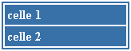

|
Her kan du bl.a. se hvordan menyen på denne siden har blitt delt opp i bokser med hvit kant omkring.

Dette eksempelet viser hvordan man lager rammer rundt tabeller med den farge og det utsende man selv
ønsker. Resultatet man til slutt ender opp med er likt bildet til venstre. Klikk på bildet for å lese
dette eksempelet.

Dette eksempelet viser hvordan man lager overskriftsceller på tabeller. Tabellen har en ramme på 1
pixel, og overskriftcellen er innrammet med samme type ramme. Resultatet i dette eksempelet er vist
på bildet til venstre. Klikk på bildet for å lese eksempelet.
|